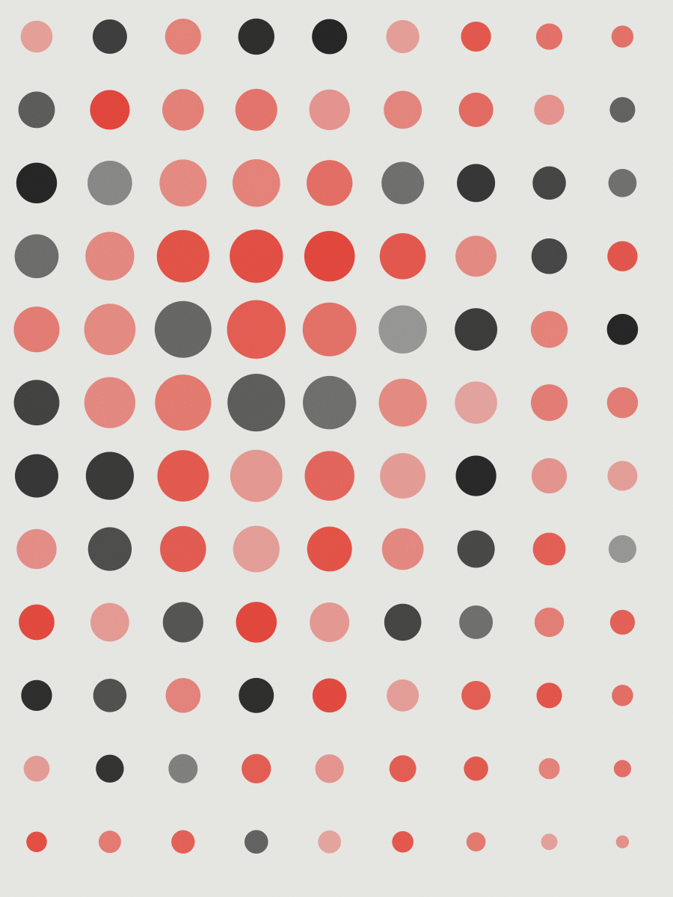

Granja Coqueiro

A granja vendia ovo caipira em embalagem de papelão branco, sem marca. O dono queria um rótulo que aguentasse geladeira e transporte, e um nome que o caminhoneiro conseguisse ler de longe na BR-060.
Desenhei o C em lápis, digitalizei e refiz o traço em 6 pt de espessura. São 14 rótulos para 3 tamanhos de vidro e uma fita de kraft para fechar a caixa de uma dúzia.
- Ano
- 2023
- Cliente
- Granja Coqueiro, Botucatu
- Escopo
- logotipo, 14 rótulos, manual de 32 páginas
- Tipografia
- Ortica (título) + Söhne (texto)
- Impressão
- offset 3 cores em papel couché 250 g
- Prazo
- 7 semanas